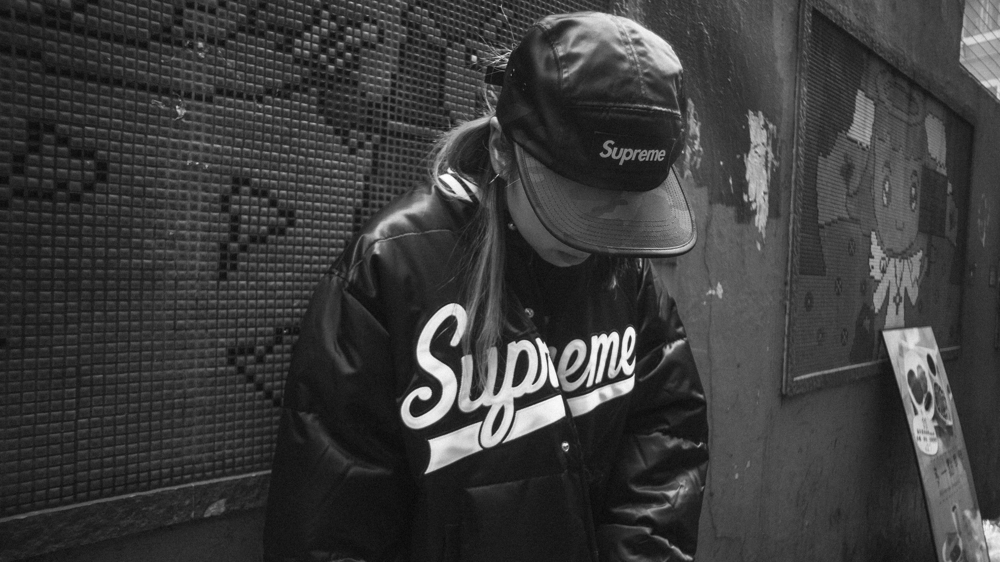

O estilo streetwear surgiu na década de 1980, nas ruas de Nova York e Los Angeles, como uma forma de expressão da cultura hip-hop e skate. Na época, jovens artistas e skatistas começaram a criar suas próprias roupas, misturando peças esportivas e casuais com estampas, grafismos e cores vibrantes. A marca de skate Stüssy, fundada em 1980 na Califórnia, é considerada uma das pioneiras do estilo streetwear. A empresa lançou camisetas com o logotipo da marca, que se tornaram muito populares entre os jovens da época. Outras marcas, como a Supreme, fundada em 1994 em Nova York, e a BAPE, fundada em 1993 no Japão, também tiveram um papel importante no desenvolvimento do estilo streetwear, criando peças icônicas e colaborações com artistas, músicos e designers renomados. Hoje, o estilo streetwear é popular em todo o mundo e influencia a moda e a cultura popular em geral, com marcas e designers criando peças inspiradas no estilo urbano e casual das ruas.
A Nike é uma marca que tem uma forte presença no cenário do streetwear, tendo colaborado com diversos artistas, designers e marcas de streetwear ao longo dos anos. A Nike tem sido conhecida por criar tênis icônicos que são muito populares entre os fãs de streetwear, como os modelos Air Jordan, Air Max e Dunk. A Nike também tem colaborado com marcas de streetwear como a Supreme, Off-White e Stüssy para criar peças de vestuário e tênis de edição limitada. Essas colaborações geralmente apresentam designs exclusivos e combinações de cores que se tornam muito cobiçados pelos fãs de streetwear. Além disso, a Nike tem patrocinado eventos e competições de esportes urbanos como o skate e o basquete de rua, o que tem ajudado a fortalecer sua presença na cultura do streetwear. Em resumo, a Nike é uma marca que tem sido uma influência significativa no desenvolvimento do estilo streetwear, criando tênis e colaborações de roupas que têm sido muito populares entre os jovens de todo o mundo.
A Supreme é uma marca de streetwear que se tornou um ícone do estilo urbano. Fundada em Nova York em 1994, a marca se tornou conhecida por suas colaborações com artistas e designers, bem como por suas peças de vestuário e acessórios que apresentam o logotipo vermelho e branco icônico da marca. A Supreme tem sido uma das marcas mais influentes no cenário do streetwear, tornando-se uma das marcas mais cobiçadas e desejadas pelos fãs do estilo urbano. A marca tem colaborado com diversas marcas de moda, incluindo Nike, Comme des Garçons e Louis Vuitton. Além de suas colaborações, a Supreme é conhecida por lançar novas coleções de roupas e acessórios todas as semanas durante a temporada, muitas vezes apresentando designs exclusivos e limitados em suas peças. Isso aumenta a demanda por seus produtos e cria uma sensação de exclusividade em torno da marca. A Supreme também é conhecida por sua presença na cultura pop, tendo colaborado com músicos, artistas e filmes, o que ajudou a consolidar ainda mais sua posição no cenário do streetwear. Em resumo, a Supreme é uma marca icônica de streetwear, conhecida por suas colaborações, designs exclusivos e seu logotipo vermelho e branco icônico. A marca é uma das mais influentes e desejadas no mundo da moda urbana.